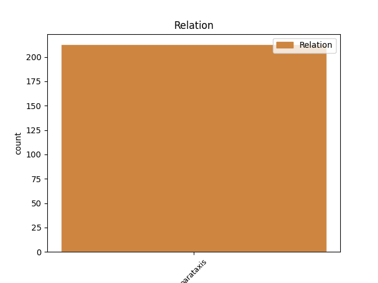
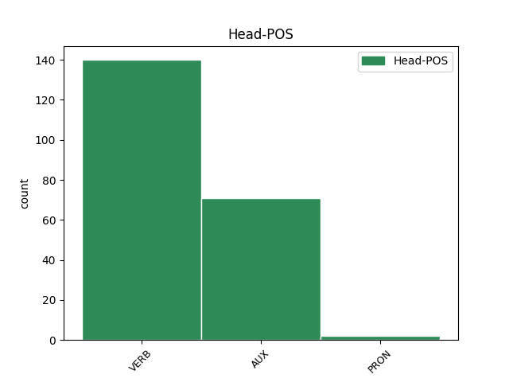
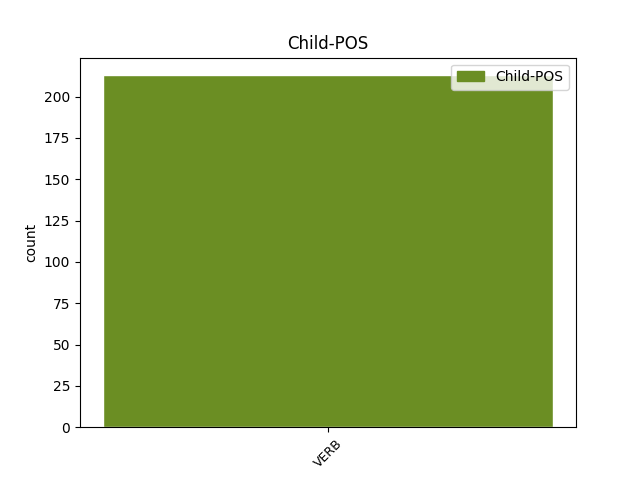

Distribution of features within this leaf



Agreement Rules sorted by frequency.
- When the dependent token is the parataxis(parataxis) of the head token, and the head token is VERB and the dependent token is VERB.
1 ja _ _ _ _ 0 _ _ _
2 pač _ _ _ _ 0 _ _ _
3 res _ _ _ _ 0 _ _ _
4 je biti VERB Va-r3s-n Mood=Ind|Number=Sing|Person=3|Polarity=Pos|Tense=Pres|VerbForm=Fin 0 _ _ _
5 ful _ _ _ _ 0 _ _ _
6 ji _ _ _ _ 0 _ _ _
7 hitro _ _ _ _ 0 _ _ _
8 pride priti VERB Vmer3s Aspect=Perf|Mood=Ind|Number=Sing|Person=3|Tense=Pres|VerbForm=Fin 4 parataxis _ msd=Ggdste|word=pride
1 ampak _ _ _ _ 0 _ _ _
2 eee _ _ _ _ 0 _ _ _
3 skratka _ _ _ _ 0 _ _ _
4 si biti AUX Va-r2s-n Mood=Ind|Number=Sing|Person=2|Polarity=Pos|Tense=Pres|VerbForm=Fin 0 _ _ _
5 pravi _ _ _ _ 0 _ _ _
6 kleni _ _ _ _ 0 _ _ _
7 pohorec _ _ _ _ 0 _ _ _
8 kako _ _ _ _ 0 _ _ _
9 se _ _ _ _ 0 _ _ _
10 pa _ _ _ _ 0 _ _ _
11 štekate štekati VERB Vmpr2p Aspect=Imp|Mood=Ind|Number=Plur|Person=2|Tense=Pres|VerbForm=Fin 4 parataxis _ msd=Ggnsdm|word=štekate
12 z _ _ _ _ 0 _ _ _
13 onimi _ _ _ _ 0 _ _ _
14 savinjčani _ _ _ _ 0 _ _ _
15 ? _ _ _ _ 0 _ _ _
1 [speaker:laughter] _ _ _ _ 0 _ _ _
2 [name:personal] _ _ _ _ 0 _ _ _
3 kako _ _ _ _ 0 _ _ _
4 pa _ _ _ _ 0 _ _ _
5 vi ti PRON Pp2mpn Case=Nom|Gender=Masc|Number=Plur|Person=2|PronType=Prs 0 _ _ _
6 kaj _ _ _ _ 0 _ _ _
7 ste _ _ _ _ 0 _ _ _
8 v _ _ _ _ 0 _ _ _
9 redu _ _ _ _ 0 _ _ _
10 spali _ _ _ _ 0 _ _ _
11 ste biti VERB Va-r2p-n Mood=Ind|Number=Plur|Person=2|Polarity=Pos|Tense=Pres|VerbForm=Fin 5 parataxis _ msd=Gp-sdm-n|word=ste
12 v _ _ _ _ 0 _ _ _
13 redu _ _ _ _ 0 _ _ _
14 ? _ _ _ _ 0 _ _ _
Disagree Examples:
1 ja _ _ _ _ 0 _ _ _
2 upam _ _ _ _ 0 _ _ _
3 da _ _ _ _ 0 _ _ _
4 boste biti AUX Va-f2p-n Mood=Ind|Number=Plur|Person=2|Polarity=Pos|Tense=Fut|VerbForm=Fin 0 _ _ _
5 tudi _ _ _ _ 0 _ _ _
6 vi _ _ _ _ 0 _ _ _
7 kdaj _ _ _ _ 0 _ _ _
8 prišli _ _ _ _ 0 _ _ _
9 eee _ _ _ _ 0 _ _ _
10 na _ _ _ _ 0 _ _ _
11 svoj _ _ _ _ 0 _ _ _
12 račun _ _ _ _ 0 _ _ _
13 v _ _ _ _ 0 _ _ _
14 naših _ _ _ _ 0 _ _ _
15 nagradnih _ _ _ _ 0 _ _ _
16 igrah _ _ _ _ 0 _ _ _
17 no _ _ _ _ 0 _ _ _
18 saj _ _ _ _ 0 _ _ _
19 že _ _ _ _ 0 _ _ _
20 danes _ _ _ _ 0 _ _ _
21 začenjamo začenjati VERB Vmpr1p Aspect=Imp|Mood=Ind|Number=Plur|Person=1|Tense=Pres|VerbForm=Fin 4 parataxis _ msd=Ggnspm|word=začenjamo
22 eno _ _ _ _ 0 _ _ _
23 novo _ _ _ _ 0 _ _ _
24 ne _ _ _ _ 0 _ _ _
1 ma _ _ _ _ 0 _ _ _
2 tista _ _ _ _ 0 _ _ _
3 glavna _ _ _ _ 0 _ _ _
4 pjevačica _ _ _ _ 0 _ _ _
5 ni biti AUX Va-r3s-y Mood=Ind|Number=Sing|Person=3|Polarity=Neg|Tense=Pres|VerbForm=Fin 0 _ _ _
6 glih _ _ _ _ 0 _ _ _
7 glavna _ _ _ _ 0 _ _ _
8 v _ _ _ _ 0 _ _ _
9 tem _ _ _ _ 0 _ _ _
10 komadu _ _ _ _ 0 _ _ _
11 mislim misliti VERB Vmpr1s Aspect=Imp|Mood=Ind|Number=Sing|Person=1|Tense=Pres|VerbForm=Fin 5 parataxis _ msd=Ggnspe|word=mislim
12 da _ _ _ _ 0 _ _ _
13 so _ _ _ _ 0 _ _ _
14 oni _ _ _ _ 0 _ _ _
15 štirje _ _ _ _ 0 _ _ _
16 srce _ _ _ _ 0 _ _ _
17 pesmi _ _ _ _ 0 _ _ _
1 ker _ _ _ _ 0 _ _ _
2 če _ _ _ _ 0 _ _ _
3 greste _ _ _ _ 0 _ _ _
4 vi _ _ _ _ 0 _ _ _
5 štet _ _ _ _ 0 _ _ _
6 stvari _ _ _ _ 0 _ _ _
7 v _ _ _ _ 0 _ _ _
8 vašem _ _ _ _ 0 _ _ _
9 stanovanju _ _ _ _ 0 _ _ _
10 jih _ _ _ _ 0 _ _ _
11 imate imeti VERB Vmpr2p-n Aspect=Imp|Mood=Ind|Number=Plur|Person=2|Polarity=Pos|Tense=Pres|VerbForm=Fin 0 _ _ _
12 krepko _ _ _ _ 0 _ _ _
13 več _ _ _ _ 0 _ _ _
14 kot _ _ _ _ 0 _ _ _
15 petnajst _ _ _ _ 0 _ _ _
16 tisoč _ _ _ _ 0 _ _ _
17 evrov _ _ _ _ 0 _ _ _
18 ker _ _ _ _ 0 _ _ _
19 govoriva _ _ _ _ 0 _ _ _
20 čisto _ _ _ _ 0 _ _ _
21 o _ _ _ _ 0 _ _ _
22 vsaki _ _ _ _ 0 _ _ _
23 stvari _ _ _ _ 0 _ _ _
24 o _ _ _ _ 0 _ _ _
25 vsakem _ _ _ _ 0 _ _ _
26 lončku _ _ _ _ 0 _ _ _
27 ki _ _ _ _ 0 _ _ _
28 lahko _ _ _ _ 0 _ _ _
29 zgori _ _ _ _ 0 _ _ _
30 v _ _ _ _ 0 _ _ _
31 požaru _ _ _ _ 0 _ _ _
32 eee _ _ _ _ 0 _ _ _
33 o _ _ _ _ 0 _ _ _
34 vsakem _ _ _ _ 0 _ _ _
35 prtičku _ _ _ _ 0 _ _ _
36 o _ _ _ _ 0 _ _ _
37 s _ _ _ _ 0 _ _ _
38 [gap] _ _ _ _ 0 _ _ _
39 o _ _ _ _ 0 _ _ _
40 snemalniku _ _ _ _ 0 _ _ _
41 o _ _ _ _ 0 _ _ _
42 televiziji _ _ _ _ 0 _ _ _
43 če _ _ _ _ 0 _ _ _
44 bi _ _ _ _ 0 _ _ _
45 resnično _ _ _ _ 0 _ _ _
46 do _ _ _ _ 0 _ _ _
47 kakšne _ _ _ _ 0 _ _ _
48 hujše _ _ _ _ 0 _ _ _
49 stvari _ _ _ _ 0 _ _ _
50 prišlo _ _ _ _ 0 _ _ _
51 je _ _ _ _ 0 _ _ _
52 tega _ _ _ _ 0 _ _ _
53 je _ _ _ _ 0 _ _ _
54 tega _ _ _ _ 0 _ _ _
55 je biti VERB Va-r3s-n Mood=Ind|Number=Sing|Person=3|Polarity=Pos|Tense=Pres|VerbForm=Fin 11 parataxis _ msd=Gp-ste-n|word=je
56 tega _ _ _ _ 0 _ _ _
57 krepko _ _ _ _ 0 _ _ _
58 več _ _ _ _ 0 _ _ _
59 a _ _ _ _ 0 _ _ _
60 ne _ _ _ _ 0 _ _ _
1 tisti _ _ _ _ 0 _ _ _
2 ki _ _ _ _ 0 _ _ _
3 pa _ _ _ _ 0 _ _ _
4 imajo _ _ _ _ 0 _ _ _
5 denar _ _ _ _ 0 _ _ _
6 ki _ _ _ _ 0 _ _ _
7 si _ _ _ _ 0 _ _ _
8 pravzaprav _ _ _ _ 0 _ _ _
9 bi _ _ _ _ 0 _ _ _
10 lahko _ _ _ _ 0 _ _ _
11 privoščili _ _ _ _ 0 _ _ _
12 nakupe _ _ _ _ 0 _ _ _
13 pa _ _ _ _ 0 _ _ _
14 da _ _ _ _ 0 _ _ _
15 jih _ _ _ _ 0 _ _ _
16 opogumimo opogumiti VERB Vmer1p Aspect=Perf|Mood=Ind|Number=Plur|Person=1|Tense=Pres|VerbForm=Fin 0 _ _ _
17 da _ _ _ _ 0 _ _ _
18 gredo _ _ _ _ 0 _ _ _
19 v _ _ _ _ 0 _ _ _
20 trgovino _ _ _ _ 0 _ _ _
21 … _ _ _ _ 0 _ _ _
22 se _ _ _ _ 0 _ _ _
23 mi _ _ _ _ 0 _ _ _
24 zdi zdeti VERB Vmpr3s Aspect=Imp|Mood=Ind|Number=Sing|Person=3|Tense=Pres|VerbForm=Fin 16 parataxis _ msd=Ggnste|word=zdi
25 to _ _ _ _ 0 _ _ _
26 zelo _ _ _ _ 0 _ _ _
27 zelo _ _ _ _ 0 _ _ _
28 ključno _ _ _ _ 0 _ _ _
1 kot _ _ _ _ 0 _ _ _
2 bomo _ _ _ _ 0 _ _ _
3 slišali _ _ _ _ 0 _ _ _
4 v _ _ _ _ 0 _ _ _
5 nadaljevanju _ _ _ _ 0 _ _ _
6 ekonomista _ _ _ _ 0 _ _ _
7 vašega _ _ _ _ 0 _ _ _
8 kolega _ _ _ _ 0 _ _ _
9 [name:personal] _ _ _ _ 0 _ _ _
10 [name:surname] _ _ _ _ 0 _ _ _
11 [name:surname] _ _ _ _ 0 _ _ _
12 je biti AUX Va-r3s-n Mood=Ind|Number=Sing|Person=3|Polarity=Pos|Tense=Pres|VerbForm=Fin 0 _ _ _
13 eee _ _ _ _ 0 _ _ _
14 slovenija _ _ _ _ 0 _ _ _
15 v _ _ _ _ 0 _ _ _
16 tej _ _ _ _ 0 _ _ _
17 finančni _ _ _ _ 0 _ _ _
18 krizi _ _ _ _ 0 _ _ _
19 nemočna _ _ _ _ 0 _ _ _
20 je _ _ _ _ 0 _ _ _
21 odvisna _ _ _ _ 0 _ _ _
22 od _ _ _ _ 0 _ _ _
23 dinamike _ _ _ _ 0 _ _ _
24 na _ _ _ _ 0 _ _ _
25 globalnem _ _ _ _ 0 _ _ _
26 trgu _ _ _ _ 0 _ _ _
27 lahko _ _ _ _ 0 _ _ _
28 pa _ _ _ _ 0 _ _ _
29 kot _ _ _ _ 0 _ _ _
30 pravi _ _ _ _ 0 _ _ _
31 eee _ _ _ _ 0 _ _ _
32 [name:personal] _ _ _ _ 0 _ _ _
33 [name:surname] _ _ _ _ 0 _ _ _
34 [name:surname] _ _ _ _ 0 _ _ _
35 ublažimo ublažiti VERB Vmer1p Aspect=Perf|Mood=Ind|Number=Plur|Person=1|Tense=Pres|VerbForm=Fin 12 parataxis _ msd=Ggdspm|word=ublažimo
36 posledice _ _ _ _ 0 _ _ _
37 krize _ _ _ _ 0 _ _ _